Chapitre I : Introduction aux sciences des données
Ce chapitre porte sur les grands concepts et les enjeux des sciences des données.
Analyse de données
L'explosion des capacités de stockage de données est à l'origine d'une explosion de la taille des jeux de données à traiter. D'où la nécessité de trouver de nouvelles manières de manipuler, traiter, analyser et interpréter nos données.
La 1ère étape lorsque l'on est confronté à un vaste jeu de données est toujours de l'analyser, afin d'essayer de le comprendre :
Quels types de données contient-il ? Ces données sont-elles de qualité ? Comment ces données sont-elles réparties ? Peut-on tisser des liens entre les différentes variables ? Peut-on regrouper les différentes réalisations de ces variables en groupes ?
Cette étape est essentielle si l'on veut par la suite entrainer un modèle à "apprendre" de nos données.
Nature et type des données
Une des difficultés rencontrées en sciences des données provient de la grande variétés des données.
Données de différentes natures
Tout d'abord, les variables étudiées peuvent être de nature différente :
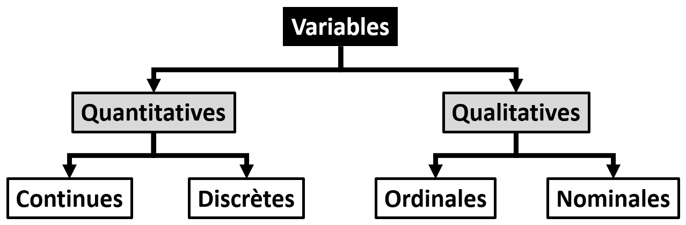
-
Une donnée quantitative continue peut prendre n'importe quelle valeur numérique : par exemple, le prix d'un kilo de farine.
-
Une donnée quantitative discrète ne peut prendre qu'un nombre fini de valeurs numériques dans un intervalle : par exemple, le nombre de pépites de chocolats dans une brioche.
-
Une donnée qualitative nominale est descriptive sans ordre hiérarchique : par exemple, la région d'origine d'une pâtisserie.
-
Une donnée qualitative ordinale est descriptive avec un ordre hiérarchique : par exemple, le niveau de cuisson d'une baguette de pain (blanche, pas trop cuite, bien cuite).
Données multidimensionnelles
Les données étudiées peuvent aussi être multidimensionnelles.
En effet, dans la pluplart des situations, notre jeu de données peut se mettre sous la forme d'un tableau, dont
-
Les colonnes correspondront aux "variables".
-
Les lignes correspondront aux "individus" : les différentes réalisations de ces variables.
L'ensemble des individus sera nommé "population", une sélection des individus un "échantillon".
Voici un exemple de jeu de données multidimensionnelles :
| Brioche n°1 | Poids (g) | Nombre de pépites de chocolat | Prix (€) |
|---|---|---|---|
| 1 | 70 | 13 | 3.5 |
| 2 | 80 | 17 | 3.6 |
| 3 | 85 | 15 | 3.7 |
| 4 | 83 | 16 | 3.4 |
| 5 | 76 | 18 | 3.3 |
| 6 | 78 | 13 | 3.5 |
Nous avons ici 6 individus, les brioches, pour lesquelles nous avons mesuré 3 variables, le poids, le nombre de pépites de chocolat, et le prix.
| Astuce Python |
|---|
| Pour stocker puis manipuler des données multidimensionnelles, on utilise souvent en Python un type de conteneur de la bibliothèque Pandas : les "DataFrames". |
| Les DataFrames se présentent comme des tableaux pouvant contenir des variables de types différents, avec un label associé à chaque colonne du tableau (variable). |
| Nous reparlerons de Pandas plus loin dans ce chapitre. |
Données structurées
Enfin, les données étudiées peuvent être structurées.
On entend par là que des données peuvent avoir un cohérence chronologique (série temporelle, un son) ou spatiale (une carte, une image, un texte, une vidéo).
Par exemple, dans le cas d'une image :
Chaque pixel de l'image doit être compris dans le contexte global de l'image. Il est évident que changer la position des pixels les uns par rapport aux autres change le jeu de données :
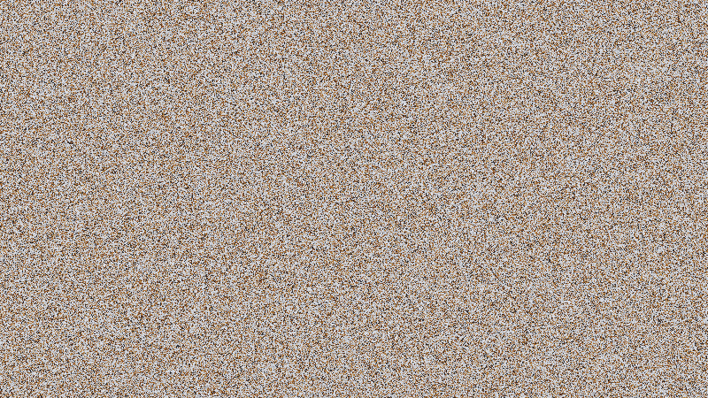
Dans certains cas, l'ordre des données est donc en soit une information nécessaire à leur interprétation.
Vous l'aurez compris, la nature des données, leur dimensionnalité, ainsi que leur structure, peuvent rendre leur compréhension difficile. Nous allons dans la suite voir comment on peut essayer de tirer des informations pertinentes de nos données.
Visualisation graphique
La 1ère étape lorsque l'on cherche à comprendre ses données, c'est d'essayer de les visualiser de manière pertinente. Nous allons voir les types de représentations graphiques les plus classiques pour visualiser un jeu de données.
Courbes et nuages de points :
Lorsque l'on veut afficher les différentes réalisations de 2 variables \(X\) et \(Y\) l'une en fonction de l'autre, on va classiquement utiliser une courbe ou un nuage de points.
Si les données ne sont pas structurées, on peut utiliser un nuage de points, qui va simplement afficher chaque réalisation comme un point sur le graphique.
Si les données sont structurées, on peut tracer des lignes entre les différentes réalisations, dans l'ordre, ce qui va donner une courbe.
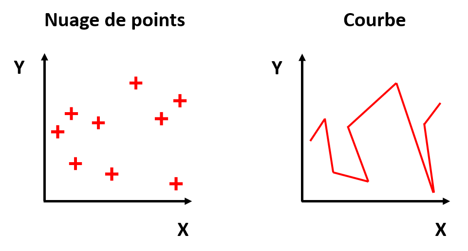
Diagrammes en barres et histogrammes :
Lorsque l'on veut rapidement comparer des quantités les unes aux autres, on va classiquement utiliser un diagramme en barres ou un histogramme.
Si on a des individus \(A\), \(B\) et \(C\) et que l'on veut comparer les valeurs d'une variable \(X\) pour ces 3 individus, on peut utiliser un diagramme en barres. On peut également utiliser un diagramme en barres pour afficher le nombre d'occurences d'une étiquette d'une variable qualitative.
Si on veut représenter la distribution des valeurs d'une variable \(X\) parmi les différents individus d'une population, on va utiliser un histogramme. Un histogramme affiche le nombre d'occurences \(N\) des valeurs sur un intervalle de \(X\). Ceci implique donc de diviser au préalable les valeurs de \(X\) en intervalles.
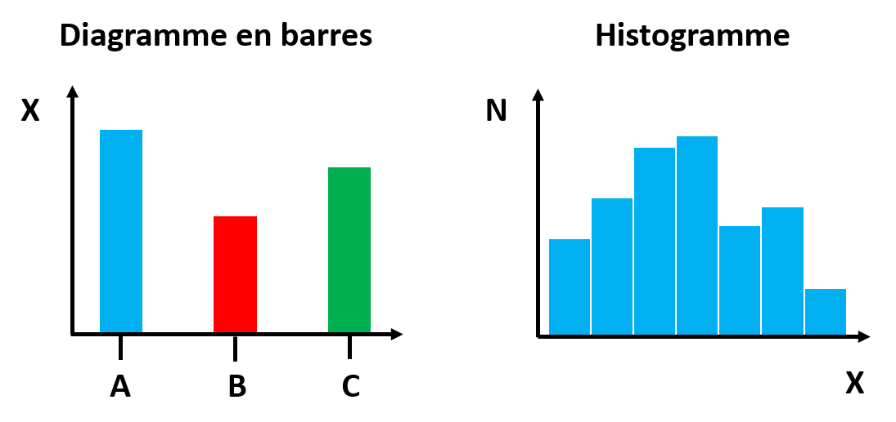
Boîtes à moustaches :
Lorsque l'on veut afficher de manière visuellement compréhensible la distribution individus pour différentes variables quantitatives \(X\), \(Y\) et \(Z\), on peut utiliser des boîtes à moustaches. On peut également l'utiliser pour visualiser la distribution d'une même variable pour différentes sous-populations.
On appelle "boîte à moustaches" une représentation graphique des principaux indicateurs de distribution d'une population pour une variable donnée. En général : le minimum, le 1er quartile, la médiane, le 3ème quartile et le maximum. Nous reparlerons de ces indicateurs plus loin dans ce chapitre.

Kernel Density Estimation (KDE) :
La KDE ou "estimation par noyau" (Kernel Density Estimation) est une méthode non-paramétrique pour estimer la distribution de probabilité d'une variable. L'avantage est que contrairement à un histogramme, on a des valeurs continues entre 0 et 1 (on ne divise pas en intervalles).
On peut l'utiliser pour afficher sous la forme d'une courbe la densité de probabilité d'une variable \(X\) (KDE 1D). On peut aussi afficher la densité de probabilité d'une variable \(X\) par rapport à une autre variable \(Y\), sous la forme d'une carte 2D avec des isolignes de densité de probabilité (KDE 2D).
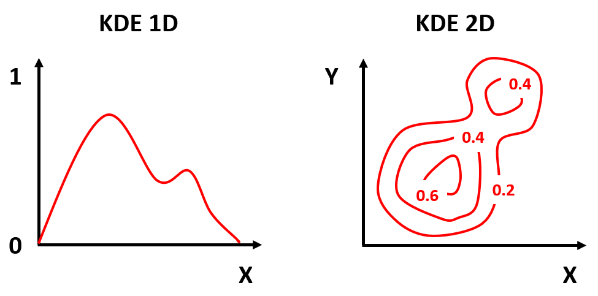
Diagramme circulaire (camembert) :
Lorsque l'on veut afficher des proportions à comparer, on utilise souvent le diagramme circulaire, aussi connu sous le nom de "diagramme camembert".
Il s'agit simplement de diviser un cercle en sections, dont la largeur représentera une proportion, et le cercle complet la proportion totale. On peut par exemple l'utiliser pour vérifier la répartition de variables qualitatives au sein d'une base de données.
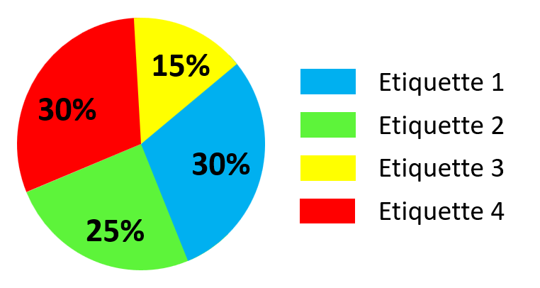
Graphique en aires :
Lorsque l'on veut afficher l'évolution d'une proportion au cours d'un variable (souvent au cours du temps), on utilise en général un graphique en aires. On peut par exemple l'utiliser pour vérifier la répartition de variables qualitatives au sein d'une base de données, en fonction d'une variable quantitative \(X\), par exemple le temps.

En Python
| Astuce Python |
|---|
| La bibliothèque Python "Pandas", dont nous reparlerons plus tard dans ce chapitre, propose une méthode "plot" à ses objets "DataFrame" qui permet des affichages graphiques à partir de jeux de données. |
| Il suffit donner le bon paramètre "kind" en entrée pour obtenir le type d'affichage voulu : |
| - "line" : une courbe. |
| - "scatter" : un nuage de points. |
| - "bar" : un diagramme en barres vertical. |
| - "barh" : un diagramme en barres horizontal. |
| - "hist" : un histogramme. |
| - "box" : des boîtes à moustaches. |
| - "kde" : une "kernel density estimation". |
| - "pie" : un diagramme circulaire. |
| - "area" : un graphique en aires. |
Statistiques descriptives
Toujours dans l'objectif de comprendre notre jeu de données, on peut essayer de décrire chaque variable par des indicateurs statistiques. Nous allons voir ici les indicateurs les plus communs en statistiques descriptives.
Il est important de savoir comment ces indicateurs sont définis afin de comprendre les informations qu'ils donnent ou ne donnent pas sur un jeu de données.
Moyenne, médiane et mode
Lorsque l'on veut connaitre l'ordre de grandeur des valeurs d'une variable, là où se rassemblent la plupart des valeurs, on va utiliser un indicateur de tendance centrale : moyenne, médiane ou mode.
- Il existe plusieurs façon de définir la moyenne, mais la plus connue est la moyenne arithmétique :
\(\overline{x} = \frac{1}{N} \sum_{i=1}^{N} x_i\)
On note en effet souvent \(\overline{x}\) la moyenne d'une variable \(x\).
-
La médiane est la valeur séparant les valeurs de la variable en 2 groupes de même taille : la moitié des valeurs sont supérieures à la médiane, l'autre moitié lui sont inférieures.
-
Le mode est la valeur la plus représentée dans l'ensemble des valeurs de la variable.
| Astuce Python |
|---|
| Dans la bibliothèque Python "Pandas", dont nous reparlerons plus tard dans ce chapitre, il y a ces méthodes associées aux objets DataFrames : |
| - ".mean()": la moyenne. |
| - ".median()": la médiane. |
| - ".mode()": le mode. |
Variance et écart-type
Lorsque l'on veut savoir à quel point les valeurs d'une variable fluctuent autour de la valeur centrale, on va utiliser des indicateurs de dispersion.
-
Les valeurs extrêmes de la variable, le min et le max, pour connaitre l'étendue de la variable.
-
La variance est définie par la moyenne des carrées des écarts à la moyenne :
\(\sigma^2 = \frac{1}{N} \sum_{i=1}^{N} (x_i - \overline{x})^2\)
- L'écart-type (souvent noté \(\sigma\)) est la racine carrée de la variance, soit a moyenne quadratique de écarts à la moyenne. Contrairement à la variance, il a l'avantage d'être homogène à la variable étudiée.
| Astuce Python |
|---|
| Dans la bibliothèque Python "Pandas", dont nous reparlerons plus tard dans ce chapitre, il y a ces méthodes associées aux objets DataFrames : |
| - ".min()" et ".max()": le minimum et le maximum. |
| - ".var()": la variance. |
| - ".std()": l'écart-type. |
Quantiles
Afin d'avoir plus d'informations sur la répartition de valeurs d'une variable, on peut généraliser la notion de médiane en utilisant ce que l'on appelle les quantiles : La division des valeurs de la variables en groupes de tailles égales.
-
Quartiles : 3 indicateurs en divisant les valeurs de la variable en 4 groupes (25%,50% et 75%).
-
Déciles : 9 indicateurs en divisant les valeurs de la variable en 10 groupes (10%, 20%, 30%, 40%, 50%, 60%, 70%, 80%, 90%).
-
Centiles : 99 indicateurs en divisant les valeurs de la variable en 100 groupes (1%, 2%, 3%, ..., 98%, 99%).
Asymétrie et kurtosis
Enfin, si l'on veut une information sur la répartition des valeurs d'une variable, sous la forme d'un indicateur unique, on va utiliser un indicateur de forme.
- Le coefficient d'asymétrie ("skewness" en anglais, souvent noté \(\gamma_1\)) permet de quantifier le désequilibre de la répartition des valeurs de la variable de chaque côté de sa valeur centrale.
\(\gamma_1 = \frac{1}{N \sigma^3} \sum_{i=1}^{N} (x_i - \overline{x})^3\)
Un coefficient négatif indique un décalage à droite, un coefficient positif un décalage à gauche, et un coefficient nul une distribution symétrique.
NB : Pour la loi normale, on a \(\gamma_1 = 0\).
- Le kurtosis (souvent noté \(\gamma_2\)) permet de quantifier l'acuité ou l'applatissement de la répartition des valeurs de la variable autour de sa valeur centrale.
\(\gamma_2 = \frac{1}{N \sigma^4} \sum_{i=1}^{N} (x_i - \overline{x})^4\)
Un kurtosis positif est un indicateur de valeurs anormales de la variable (aux extrêmités, aussi appelées "outliers") plus fréquentes. Un kurtosis négatif est un indicateur d'une distribution très applatie des valeurs de la variable.
NB : Pour la loi normale, on a \(\gamma_2 = 0\).
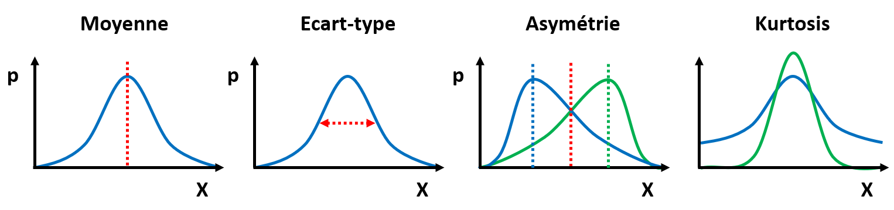
Recherche de corrélation
Une fois que l'on a décrit statistiquement les différentes variables de notre jeu de données, on va souvent vouloir essayer des tisser des liens entre ces variables. Cette analyse exploratoire des données a 2 principales utilités :
-
Voir si une ou plusieurs variables pourraient servir à en prédire une ou plusieurs autres.
-
Essayer de réduire la dimensionnalité d'un problème basé sur ces variables.
En effet, comme évoqué précédemment, les jeux de données sont souvent multidimensionnels. Quand la dimension des données devient très grande, la quantité de données devient peu dense en comparaison, ce qui rend difficile leur interprétation. On appelle communément ce problème le "Fléau de la dimension" ("curse of dimensionality" en anglais).
Nous allons voir dans un 1er temps comment essayer de déterminer ce que l'on appelle des "corrélations" entre variables. Puis nous verrons une méthode classique de réduction de dimension appelée "Analyse en Composantes Principales".
Matrice de corrélation
Une 1ère approche pour essayer de tisser des liens ou "corrélations" entre les variables et de tracer ce que l'on appelle une matrice de nuages de points, ou "scatter-matrix" en anglais.
L'idée est d'afficher une matrice de graphiques, représentant chacun une variable en fonction d'une autre, sous la forme d'un nuage de points. La diagonale n'étant pas très utile (une variable en fonction d'elle-même), on la remplace en général par un histogramme de la variable en question.
Ce type de représentation permet de détecter visuellement des relations entre les variables.
Voici un exemple :
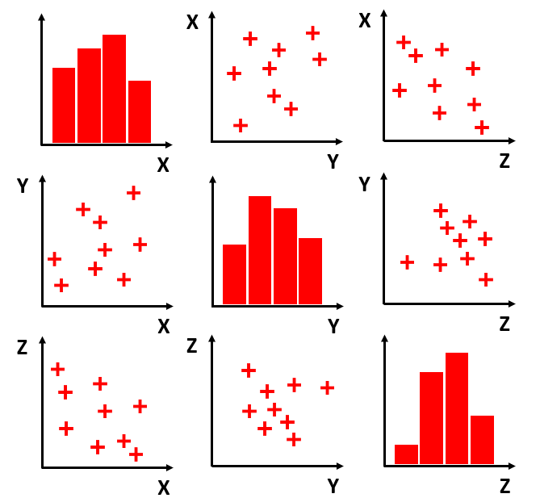
| Astuce Python |
|---|
| Dans la bibliothèque Python "Pandas", dont nous reparlerons plus tard dans ce chapitre, il y a une méthode "plotting.scatter_matrix()", qui permet d'afficher une "scatter_matrix". |
Pour quantifier la corrélation entre 2 variables \(x\) et \(y\), on va souvent se contenter de mesurer à quel point une relation linéaire \(y = a x + b\) peut être tirée de ces variables. Pour cela, on va calculer le coefficient de corrélation de Pearson :
\(r = \frac{\sum_{i=1}^{N} (x_i - \overline{x})(y_i - \overline{y})}{\sqrt{\sum_{i=1}^{N} (x_i - \overline{x})^2 \sum_{i=1}^{N} (y_i - \overline{y})^2}}\)
La valeur de ce coefficient est toujours compris entre -1 et 1 :
-
Une valeur de 1 signifie une corrélation parfaite entre les variables.
-
Une valeur de -1 signifie une anti-corrélation parfaite entre les variables.
-
Une valeur de 0 signifie une décorrélation parfaite entre les variables : elles sont indépendantes.
Il y a du sens à vouloir prédire une variable à partir d'une autre si elles sont corrélées / anti-corrélées. On peut aussi imaginer réduire la dimensionnalité d'un problème s'il se base sur plusieurs variables qui ne sont pas indépendantes.
NB : Attention ! Corrélation entre variables n'implique pas causalité entre variables !
On affiche souvent les coefficients de corrélation obtenus pour toutes les combinaisons de variables possibles sous la forme d'une matrice : la matrice de corrélation de ces variables. La diagonale de la matrice ne contient bien évidemment que des 1.
Voici un exemple où cherche les corrélations entre le diamètre, le temps de cuisson, la masse de frangipane et le prix d'une galette des rois :
| Diamètre | Cuisson | Frangipane | Prix | |
|---|---|---|---|---|
| Diamètre | 1 | 0.8 | 0.7 | 0.9 |
| Cuisson | 0.8 | 1 | 0.5 | 0.2 |
| Frangipane | 0.7 | 0.5 | 1 | 0.6 |
| Prix | 0.9 | 0.2 | 0.6 | 1 |
La moitié de l'information contenue dans cette matrice étant redondante, on n'affiche parfois que la partie triangulaire supérieure ou inférieure de cette matrice.
| Astuce Python |
|---|
| Dans la bibliothèque Python "Pandas", dont nous reparlerons plus tard dans ce chapitre, il y a une méthode "corr()" associée aux DataFrames. |
| Elle retourne une matrice de corrélation du jeu de données. |
Analyse en Composantes Principales (ACP)
Comme mentionné précédemment, les jeux de données que l'on rencontre sont souvent multidimensionels. Ceci rend difficile voir impossible un affichage graphique compréhensible des individus d'une variable par rapport à une autre (il faudrait un graphique 2D pour 2 variables, 3D pour 3 variables, 4D pour 4 variables, etc.).
Afin de représenter des données multidimensionnelles sous la forme d'un affichage graphique de dimension faible (en général 1, 2 ou 3), on utilise souvent une méthode de réduction de dimensionnalité connue sous le nom d'Analyse en Composantes Principales (ACP).
L'idée est la suivante. Soit un jeu de données contenant \(p\) variables et \(n\) individus. On va chercher \(q\) nouvelles variables par projections linéaires des \(p\) variables d'origine, avec \(q < p\), de manière à perdre le moins d'information possible sur le jeu de données.
Ces \(q\) nouvelles variables sont alors nommées composantes principales.
Il existe plusieurs algorithmes pour obtenir ce résultat, celui implémenté dans la bibliothèque Python Scikit-Learn se base sur la Décomposition en Valeurs Singulières (SVD) de la matrice de données :
\(X = \begin{pmatrix} x_{1,1} & x_{1,2} & \cdots & x_{1,p} \\ x_{2,1} & x_{2,2} & \cdots & x_{2,p} \\ \vdots & \vdots & \ddots & \vdots \\ x_{n,1} & x_{n,2} &\cdots & x_{n,p} \end{pmatrix}\)
où chaque colonne correspond à une variable, et chaque ligne correspond à un individu.
On peut voir l'ACP comme le choix du sous-espace de dimension \(q\) tel que le nuage de points projetés ait la variance la plus grande possible.
Les résultats d'une ACP peuvent être affichés sous la forme d'un nuage de points 2D ou 3D (\(q = 2\) ou \(3\)) représentant les différents individus, avec pour axes les composantes principales :
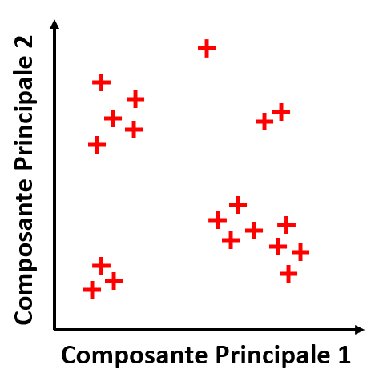
L'idée est de voir si on peut séparer les individus en différents groupes à partir des composantes principales.
Pour juger de la qualité d'une ACP, on utilise un type de graphique appelé "cercle des corrélations". Ce graphique 2D représente sur chaque axe la corrélation des \(p\) variables d'origine avec les \(q\) composantes principales. Chacune des \(p\) variables correspond à un vecteur sur ce graphique, et un cercle de rayon 1 est également affiché pour comparaison.
Voici un exemple :

Un cercle des corrélations permet donc de juger de la corrélation des variables d'origines avec les composantes principales, et de la corrélation des variables d'origine entre elles :
-
Plus une variable d'origine est proche du cercle, plus elle est fidèlement représentée par l'ACP. Dans l'idéal, on voudrait donc que toutes les variables soient proches du cercle.
-
Pour 2 variables d'origine proches du cercle, si l'angle entre 2 les variables est aigu elles sont corrélées, s'il est obtu elles sont anti-corrélées, et s'il est droit elles sont décorrélées.
On pourra utiliser la projection des données renvoyée par l'ACP pour entrainer des modèles d'apprentissage.
| Astuce Python |
|---|
| La classe "sklearn.decomposition.PCA" de la bibliothèque "Scikit-Learn" vous permet de réaliser l'ACP d'une matrice de données. |
| Le nombre de composantes principales à trouver est un des attributs de la classe à initialiser ("n_components"). |
| Pour obtenir les composantes principales d'une matrice de données, il faut lui appliquer la méthode "fit_transform()" de la classe. |
Pour aller plus loin : D'autres méthodes de réduction de dimensionnalité existent, on peut citer entre autres les "auto-encodeurs" et la "t-SNE".
Préparation des données
Une fois les données analysées, on a normalement une bonne idée de ce qu'un outil automatique pourra en "apprendre" ou non. Cependant, la plupart de ces outils (dont nous parlerons dans la section suivante), ont besoin que les données soient "transformées" d'une certaine manière.
C'est pourquoi nous allons voir dans cette section quelques transformations classiques pour préparer nos données.
Tout d'abord, il est possible que le jeu de données contienne des valeurs erronées ou manquantes, souvent marquées par des NaN ("Not a Number"). Il convient alors de se débarrasser de ces valeurs avant apprentissage, car la plupart des outils ne savent pas gérer ce problème.
| Astuce Python |
|---|
| Dans la bibliothèque Python "Pandas", dont nous reparlerons plus tard dans ce chapitre, il y a une méthode "dropna" associée aux objets DataFrames. |
| Cette méthode permet de supprimer les NaN d'un DataFrame. |
Nous allons voir que les données qualitatives doivent être encodées avant apprentissage, soit en "ordinal", soit en "one-hot".
Enfin, les outils d'apprentissage sont affectés par les différences d'ordre de grandeur entre les variables. C'est pourquoi une remise à l'échelle des différentes variables d'un jeu de données est nécessaire avant apprentissage. On appelle ce processus recalibration, ou "feature scaling" en anglais.
Nous allons voir en particulier 2 types de transformation pour recalibrer des données : la transformation min-max et le centrage-réduction.
Transformation min-max
Certains types de modèles d'apprentissage nécessitent des valeurs d'entrée entre 0 et 1. C'est pourquoi la transformation min-max ("normalization" en anglais) va recalibrer toutes les variables de manière à ce que leurs valeurs restent entre 0 et 1.
Pour ce faire, on va appliquer la formule suivante au i-ème individu \(x_i\) de la j-ème variable d'un jeu de données :
\(\frac{x_i-min_j}{max_j-min_j}\)
avec \(min_j\) le minimum et \(max_j\) le maximum des individus de la j-ème variable.
(Il est également possible d'adapter cette transformation pour les modèles prenant des valeurs entre -1 et 1 en entrée).
Le problème majeur avec cette transformation est sa sensibilité aux valeurs aberrantes. En effet, il suffit qu'une variable ait une valeur aberrante pour qu'elle devienne le minimum ou le maximum, impactant ainsi la transformation.
| Astuce Python |
|---|
| La classe "sklearn.preprocessing" de la bibliothèque "Scikit-Learn" contient une fonction "MinMaxScaler". |
Transformation centrage-réduction
La transformation centrage-reduction ("standardization" en anglais) applique la formule suivante au i-ème individu \(x_i\) de la j-ème variable d'un jeu de données :
\(\frac{x-\overline{x_p}}{\sigma_p}\)
avec \(\overline{x_p}\) la moyenne et \(\sigma_p\) l'écart-type des individus de la j-ème variable.
Cette transformation est beaucoup moins sensible aux valeurs aberrantes, mais elle ne garanti pas que les valeurs des différentes variables seront entre 0 et 1 (ou -1 et 1).
| Astuce Python |
|---|
| La classe "sklearn.preprocessing" de la bibliothèque "Scikit-Learn" contient une fonction "StandardScaler". |
Autres transformations
Nous l'avons précédemment, on peut découvrir que les individus d'une variable ont une distribution asymétrique. Par exemple, la distribution des individus peut avoir une longue traîne d'un côté de la médiane.
On peut aussi avoir une distribution multimodale (c'est-à-dire avec plusieurs pics).
Ceci peut perturber un apprentissage automatique.
Dans ces situations, d'autres types de transformation pourrons alors être envisagées en addition des 2 précédentes : utiliser la racine carrée ou le logarithme de la variable, utiliser les quantiles de la variable, utiliser un encodage de la variable, etc.
| Astuce Python |
|---|
| La classe "sklearn.preprocessing" de la bibliothèque "Scikit-Learn" permet de créer sa propre transformation, avec "FunctionTransformer". |
Encodage des données
La plupart des modèles d'apprentissage automatique dont nous allons parler dans ce cours ne peuvent manipuler que des valeurs numériques.
On va donc en général encoder des données qualitatives avec des valeurs numériques. Par exemple :
| Cuisson du pain | Encodage |
|---|---|
| Blanc | 1 |
| Pas trop cuit | 2 |
| Bien cuit | 3 |
On appelle cet encodage, encodage par étiquette ("label encoding").
Cette méthode fonctionne toujours pour des données ordinales comme la cuisson du pain, mais pour des données nominales le modèle risque de croire qu'il y a un ordre hiérarchique dans les données qui n'existe pas. C'est pourquoi on utilise souvent l'encodage one-hot.
L'idée est de faire comme si chaque nom possible pour une variable qualitative était une variable en soit. On appelle parfois ces variables imaginaires des "dummy variables".
Par exemple, pour la région d'origine des pâtisseries, on passe de :
| Pâtisserie | Région |
|---|---|
| Croissant | Paris |
| Merveilleux | Nord |
| Kouign-amann | Bretagne |
| Cannelé | Sud-Ouest |
| Kougelhopf | Est |
à l'encodage one-hot suivant :
| Pâtisserie | Paris | Nord | Bretagne | Sud-Ouest | Est |
|---|---|---|---|---|---|
| Croissant | 1 | 0 | 0 | 0 | 0 |
| Merveilleux | 0 | 1 | 0 | 0 | 0 |
| Kouign-amann | 0 | 0 | 1 | 0 | 0 |
| Cannelé | 0 | 0 | 0 | 1 | 0 |
| Kougelhopf | 0 | 0 | 0 | 0 | 1 |
Pour le Merveilleux, on donnera donc en entrée d'un modèle le binaire 01000.
On remarque ici que plus la variable a de noms possibles, et plus les binaires d'encodage one-hot seront longs, ce qui peut être problématique.
| Astuce Python |
|---|
| La bibliothèque Scikit-Learn possède dans son package "preprocessing" des fonctions "LabelEncoder" et "OrdinalEncoder", permettant d'assigner un entier à des variables qualitatives nominales ou ordinales. |
| Dans ce même package, vous trouverez également une fonction "OneHotEncoder", permettant d'encoder en one-hot des variables qualitatives nominales. |
| Dans les 2 cas, il vous faut créer une instance de "OrdinalEncoder" ou de "OneHotEncoder", puis utiliser la méthode "fit_transform()" avec vos données en entrée. |
Les apprentissages
Une fois que l'on a bien cerné notre jeu de données, et qu'on l'a transformé de manière adéquate, on va en général vouloir le modéliser. L'idée du modèle sera de prendre une décision sur à partir de nouvelles données, en se basant sur la connaissance des données de la base d'origine. On parle alors d'"apprendre" des données.
L'apprentissage automatique
Par "modéliser", on entend trouver une fonction paramétrique \(M\) qui permet de déduire une sortie vectorielle \(y\) voulue à partir d'une entrée vectorielle de nouvelles données \(x\) et de nos connaissances sur les données d'origine :
\(y = M(x,\theta)\)
avec \(\theta\) les paramètres du modèle, qui correspondent à notre connaissance du jeu de données initial.
Il nous faut donc ajuster les paramètres \(\theta\) pour obtenir la sortie \(y\) attendue en fonction de \(x\) qui colle le plus aux données. C'est ce processus d'optimisation de \(\theta\) que l'on appelle "apprentissage".
Les jeux de données dont on doit apprendre sont en général énormes, ce qui rend souvent un ajustement manuel des paramètres impossible. C'est pourquoi on va en général choisir un type de modèle, et ajuster automatiquement les paramètres à nos données.
D'où l'expression "apprentissage automatique".
Suivant les applications, il existe différents types d'apprentissage, avec pour chacun différents types de modèles possibles. Lors de ce cours, nous verrons 3 grands types d'apprentissage, et nous verrons pour chacun quelques exemples de modèles classiques.
Les 3 grands types d'apprentissages
En apprentissage, on appelle souvent en anglais les entrées d'un modèle les "features", et les sorties des "labels".
Lors du processus d'apprentissage (ajustement des paramètres), on va enseigner au modèle comment déterminer des "labels" correspondant à des "features", en se basant sur ce qu'il a appris d'une base de données d'"entrainement" de "features".
Par exemple, on peut vouloir entrainer un modèle à associer à une photo de viennoiserie (feature) le nom de la viennoiserie (label) :

Ou alors, on peut vouloir entrainer un modèle à associer à la masse de farine, la masse de beurre, le volume de lait et le diamètre d'un lot de crêpes (features) le prix de la crêpe (label) :
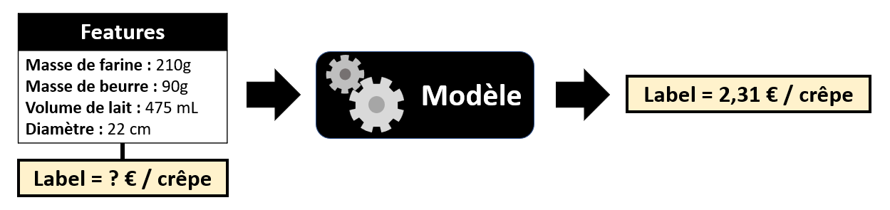
Apprentissage supervisé ou non-supervisé
Dans le cas où les données d'apprentissage ont des "labels" définis, le modèle va apprendre à retrouver ces "labels" (connus) pour ces "features". On espère alors qu'après apprentissage, le modèle pourra retourner les "labels" corrects une fois confronté à des "features" issus de nouvelles données. On parle alors de "généralisation".
Comme on peut directement vérifier les performances du modèle à prédire les "labels" du jeu de données d'entrainement, on parle d'apprentissage supervisé.
Le processus est en général itératif : le modèle va se mettre à jour au fur et à mesure des itérations pour réduire l'erreur de prédiction. On a donc besoin d'une fonction d'évaluation de l'erreur, aussi appelée "fonction de coût".
Voici le concept résumé graphiquement, avec notre exemple de l'association d'un nom de viennoiserie à une photo :

Dans le cas où les données d'apprentissage n'ont pas de "labels", on peut tout de même essayer de diviser les individus des "features" en différent groupes, auxquels on assignera des "labels" plus tard. On appelle la première étape "partition", et la seconde "labélisation".
On a besoin d'un critère de proximité entre individus afin de définir ces groupes, souvent une "distance". Il s'agit aussi souvent d'un processus itératif.
Comme nous n'avons pas de "labels" d'entrainement comme référence, on parle d'apprentissage non-supervisé ou "clustering" ("partition de données").
Voici le concept résumé graphiquement, toujours avec notre exemple de l'association d'un nom de viennoiserie à une photo :

Classification et régression
On peut aussi diviser les apprentissages suivant la nature des sorties attendue, et donc de modèle à entrainer.
Si la sortie est quantitative discrète ou qualitative, on va parler de "classification".
Si la sortie est quantitative continue, on va parler de "régression".
Si l'on reprend nos 2 exemples précédents :
-
Le nom d'une viennoiserie étant une étiquette, soit une variable qualitative, il s'agit d'un problème de classification.
-
Le prix d'une crêpe étant une variable quatitative continue, il s'agit d'un problème de régression.
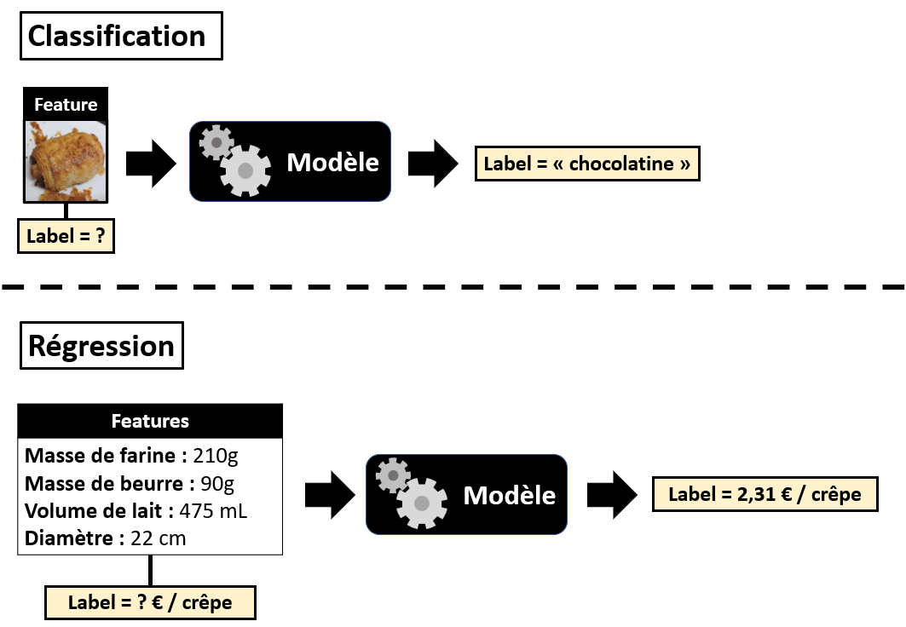
On peut entrainer un modèle de classification de manière supervisée ou non-supervisée.
On ne peut entrainer un modèle de régression que de manière supervisée.
NB : Seule la classification peut être "non-supervisée", et on parle en général directement de partitionnement ("clustering").
Pour aller plus loin...
Il existe un 3ème type d'apprentissage, que nous ne détaillerons pas dans ce cours, qui s'appelle "apprentissage par renforcement".
L'idée est la suivante :
-
Le modèle est directement mis en place sur son cas d'application final.
-
Le modèle prend des décisions en fonction des situations, et reçoit un retour ("feedback") sur sa décision, positif ou négatif.
-
Le modèle se met à jour en fonction du retour qu'il a reçu.
Ce processus se répète pour chaque nouvelle situation, et ainsi le modèle apprend de ses expériences.
Voici un petit schéma récapitulatif des différents types d'apprentissages que nous avons vus :

Difficultés de l'apprentissage
Comme expliqué plus haut, l'apprentissage est un processus d'optimisation, qui consiste en l'ajustement des paramètres d'un modèle en se basant sur les données disponibles, dans le but de prendre des décisions correctes à partir de données futures (généralisation).
La phase durant laquelle on ajuste les paramètres est appelée entraînement, et les données sur lesquelles cet ajustement est fait sont appelées "base de données d'entraînement".
Dans la section qui suit, nous aurons un aperçu des grandes difficultées que l'on peut rencontrer lors de l'entrainement d'un modèle, tous types de modèles confondus.
Quantité et qualité des données
S'il n'y a pas de règle précise pour déterminer la quantité de données nécessaire à un apprentissage, il y a 2 maximes à retenir :
-
Plus on a de données d'entrainement, meilleur sera l'apprentissage par le modèle.
-
Plus le problème complexe, plus il faudra de données d'entrainement.
Par exemple, dans notre exemple de classification des images de viennoiseries :

Pour donner un ordre de grandeur, la quantité d'individus nécessaires à un apprentissage va en général de quelques milliers à des centaines de millions. Cependant, il n'est pas aisé de constituer une base de données aussi large, et de surcroit une base de donnée de qualité.
En effet, comme on peut facilement le deviner, la qualité des données aura un impact sur l'apprentissage. La qualité des données peut par exemple être dégradée par :
-
La présence d'individus abérrants ("outliers"), liée à des erreurs de mesures ou à des cas exceptionnels.
-
Des individus manquants, liés à notre échantillonnage ou a des erreurs de mesures.
-
La présence de bruit dans les données.
Toujours pour notre exemple, on peut avoir des données manquantes ou abérrantes :

D'où la nécessité de procéder à un nettoyage des données en amont de l'apprentissage : supprimer certaines données, les combler, ou faire de nouvelles mesures.
Malheureusement, nettoyer les données implique parfois de diminuer la quantité de données : on est donc souvent confronté à un compromis entre quantité et qualité des données.
Représentativité et équilibre des données
Comme expliqué précedemment, notre but est d'obtenir à partir de notre base de données d'entrainement un modèle qui soit généralisable à toutes nouvelles données que l'on peut rencontrer.
Pour atteindre cet objectif, il faut que la base de données que l'on utilise pour entrainer le modèle soit représentative de la distribution des différentes variables de manière générale. Ceci implique de faire attention à la représentativité de notre population au moment de l'échantillonnage, sous peine que le modèle ait du mal à généraliser.
Parfois, certains types d'individus sont par nature sous ou sur-représentés dans la population générale, et donc le seront toujours si on échantillonne de manière représentative. Comme on peut s'y attendre, ceci va avoir tendance à biaser notre modèle.
Par exemple, mettons que l'on veuille entrainer un modèle à reconnaitre une photo d'un pain au chocolat d'un pain suisse. Les pains au chocolat étant plus courants en boulangerie que les pains suisses, on aura un déséquilibre dans la base de données d'entrainement, qui fera que notre modèle aura plus tendance à prédire qu'une photo montre un pain au chocolat qu'un pain suisse.
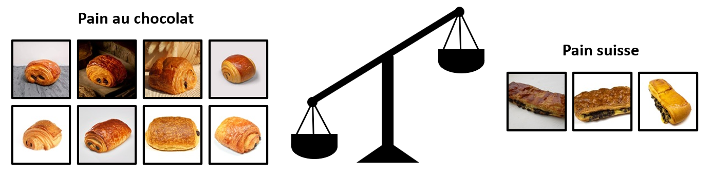
Il existe plusieurs méthodes pour éviter les biais d'entrainement, en jouant soit sur l'échantillonage, soit sur les poids accordés aux différentes données pendant l'entrainement.
Il est à noter qu'un mauvais échantillonage ou un déséquilibre d'une base de données utilisée pour la tester notre modèle après entrainement est aussi problématique : si on teste notre modèle sur une base de données ne contenant que des photos de pains au chocolat, il est évident que notre mesure des performances du modèle ne vaudra pas grand chose.
Pertinence des variables
Pour que notre modèle soit capable de renvoyer les labels (sorties) désirés, il faut que les features (entrées) le permettent.
Le sélection de variables pertinentes pour un problème donné est donc capital. C'est ce que l'on appelle en anglais le "feature engineering".
On peut diviser cette activité en 2 grandes techniques : la sélection de variables et l'extraction de variables.
La sélection de variables
Ce n'est pas parce qu'une variable est dans la base de données qu'il faut l'utiliser pour entrainer un modèle. Il faut faire un tri pour choisir les variables pertinentes pour un problème parmi toutes les variables disponibles.
Par exemple, si pour estimer le prix d'une crêpe on a accès à la masse de farine, le volume de lait et l'âge du crêpier, on va intuitivement choisir comme features la masse de farine et le volume de lait, car on devine que l'âge du crêpier n'aura pas d'impact sur le prix.
L'idée est donc de sélectionner comme features des variables qui soient corrélées aux labels.
Pour ce faire, on utilise généralement des matrices de corrélations vues précédemment.
L'extraction de variables
Multiplier le nombre de variables revient à augmenter la dimensionnalité d'un problème, ce qui rend l'apprentissage plus compliqué. De plus, certaines variables peuvent être corrélées entre elles. C'est pourquoi on peut vouloir créer de nouvelles variables pour un problème, en combinant des variables parmi celles disponibles.
Par exemple, plutôt que d'utiliser la masse de farine et le volume de lait pour prédire le prix d'une crêpe, on peut imaginer utiliser un ratio volume de lait / masse de farine.
L'idée est donc de trouver des combinaisons de variables pertinentes pour prédire les labels.
Pour ce faire, on peut se servir d'une méthode de réduction de dimensionnalité telle que l'ACP vue précédemment.
Sur-apprentissage / sous-apprentissage
Un des pires cauchemars de tout "data scientist" est le sur-apprentissage.
Le but de tout apprentissage est d'obtenir un modèle capable de généraliser à de nouvelles données ce qu'il appris sur la base de données d'entrainement.
Le problème est que lors de l'apprentissage, on va chercher à obtenir les meilleures performances possibles sur les données d'entrainement, ce qui peut pousser le modèle à apprendre des détails très spécifiques à ces données : le bruit et les "outliers" par exemple. D'où le terme de "sur-apprentissage".
Un tel modèle, trop compliqué, aura alors de mauvaises performances sur de nouvelles données : il sera incapable de généraliser.
Nous verrons dans la suite de ce chapitre la stratégie classique pour détecter et éviter le sur-apprentissage. On peut néanmoins réduire les risques en :
-
Ayant des données nombreuses et représentatives.
-
Choisissant d'abord un type de modèle simple, puis un plus complexe si besoin.
-
Nettoyant les données pour éviter le bruit et les "outliers".
L'inverse du sur-apprentissage existe aussi, et se nomme "sous-apprentissage". Le modèle est alors trop simple pour capturer la complexité des données, et il tout aussi incapable de généraliser.
Le bon compromis que l'on va rechercher se situe donc entre les 2 :
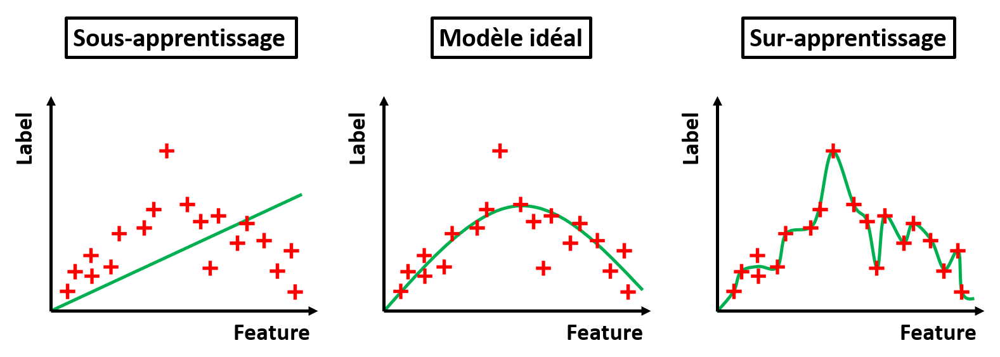
On appelle la recherche de ce compromis la "régularisation".
Stratégie pour l'apprentissage
Maintenant que nous avons passé en revue les principales difficultées auxquelles on doit faire face lors de l'apprentissage d'un modèle, nous allons nous intéresser aux stratégies d'apprentissage classiques.
Hyperparamètres
Dans le contexte de l'apprentissage d'un modèle, on distingue 2 types de paramètres :
-
Les paramètres du modèle que nous allons vouloir ajuster au cours de l'apprentissage, afin d'obtenir les labels désirés à partir de features données.
-
Les paramètres propres à l'apprentissage, que l'on nomme "hyperparamètres".
Parmis les hyperparamètres, on peut citer : la fonction de coût utilisée pour l'optimisation du modèle, l'algorithme d'optimisation utilisé, la vitesse de convergence choisie, le nombre d'itérations de l'entrainement, ou encore l'architecture du modèle.
Il est évident que les hyperparamètres vont impacter les performances du modèle obtenu après entrainement.
C'est pourquoi lors d'un apprentissage, on va en général réaliser plusieurs entrainements, avec des hyperparamètres différents, afin d'optimiser aussi les hyperparamètres.
Fonction de coût
La fonction de coût ("loss function" en anglais), est une fonction qui prend en entrée les labels prédits par le modèle et les labels attendus, et retourne un score suivant la proximité de ces labels. On l'utilise comme critère de la qualité des labels prédits par un modèle lors de son entrainement.

En général, plus la valeur retournée par la fonction de coût est faible, et meilleure est la prédiction. Le processus d'optimisation du modèle va donc chercher à minimiser la fonction de coût.
On choisit une fonction de coût selon différents critères :
-
Qu'elle soit adaptée au type de problème de classification / régression auquel on est confronté.
-
Qu'elle soit adaptée à l'algorithme d'optimisation choisi : certains algorithmes nécessitent par exemple une fonction continue ou différentiable.
-
Qu'elle soit adaptée aux hypothèses que nous avons sur les données : certaines fonctions donneront par exemple plus ou moins de poids aux "outliers".
Dans les chapitres suivants, nous verrons quelques exemples de fonctions de coût, adaptées à différents types de problèmes.
Attention ! La fonction de coût est utilisée pour évaluer la qualité de la prédiction d'un modèle sur des données labélisée. Il ne s'agit pas d'une évaluation de la performance d'un modèle en généralisation ! Cette notion, bien différente, fera l'objet d'une section dans la suite de ce chapitre.
Algorithme d'optimisation
On appelle "algorithme d'optimisation" un algorithme dont l'objectif est de trouver le minimum global de la fonction de coût, afin d'optimiser les paramètres d'un modèle. C'est lui qui réalise l'entrainement proprement dit.
Il s'agit en général d'un algorithme itératif, qui va faire varier les paramètres du modèle, afin de trouver ceux qui minimisent la fonction de coût. On appelle souvent les itérations de l'algorithme époques ("epochs" en anglais).
Voici une illustration pour un cas très simplifié de modèle à 1 paramètre :
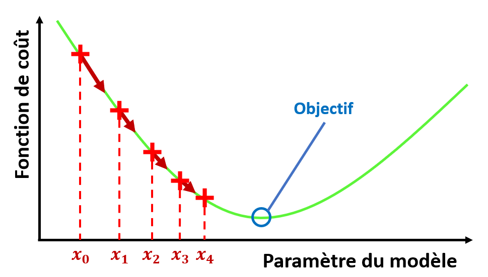
L'algorithme d'optimisation de base en apprentissage supervisé est celui de la descente de gradient. Son principe est le suivant :
| Algorithme de descente de gradient |
|---|
| Soit \(f(x)\) une fonction différentiable dont on cherche le minimum. |
| On initialise une valeur de \(x\) notée \(x_0\). |
| A chaque itération \(n\) de l'algorithme, on va se déplacer dans l'espace des valeurs de \(x\), de \(x_n\) à \(x_{n+1}\), avec la formule : |
| \(x_{n+1} = x_n - \gamma \nabla f(x_n)\) |
| avec \(\nabla f(x_n)\) le gradient de la fonction en \(x_n\), et \(\gamma\) le "taux d'apprentissage". |
| On peut mettre un critère d'arrêt sur \(\| \nabla f(x_n) \|\). |
L'idée est de parcourir l'espace des valeurs de la fonction de coût en fonction des paramètres du modèle, en suivant la direction inverse au gradient.
On explique souvent le principe de cette méthode par l'analogie des "randonneurs dans le brouillard" :
Des randonneurs de montagne se retrouvent piégés par le brouillard alors qu'il cherchent à rentrer dans la vallée. Comme ils ne peuvent plus voir le chemin, ils décident de se fier à leurs pieds : ils se dirigent dans la direction de la pente la plus forte. Sans le savoir, les randonneurs sont en train d'appliquer l'algorithme de descente de gradient pour trouver le point minimisant l'altitude : la vallée.
Encore aujourd'hui, l'entrainement des modèles d'apprentissage supervisé se fait avec des algorithmes d'optimisation basés sur la descente de gradient.
Vitesse de convergence et nombre d'itérations
Nous avons vu dans la section précédente que l'algorithme de la descente de gradient avait un paramètre appelé taux d'apprentissage.
Il est inversement proportionnel au pas avec lequel l'algorithme d'optimisation va se déplacer dans l'espace des valeurs de la fonction de coût en fonction des paramètres du modèle. Par conséquent, le taux d'apprentissage permet de choisir la vitesse de convergence de l'algorithme d'optimisation.
On s'attend à ce que plus le taux d'apprentissage soit élevé, plus la convergence vers le modèle optimal soit rapide. Or, ce n'est pas toujours le cas.
En effet, si l'algorithme se déplace trop rapidement dans l'espace des valeurs de la fonction de coût, on a un risque de dépassement ("overshooting" en anglais) : l'algorithme peut passer "par-dessus" le minimum sans s'y arrêter, voir même diverger complètement.
Le choix d'un taux d'apprentissage adapté est donc toujours affaire de compromis entre vitesse de convergence et non-dépassement.
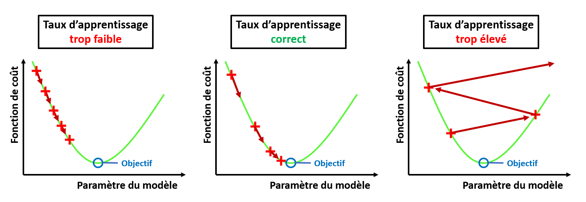
Nous avons également vu précédemment que l'on peut placer dans l'algorithme un critère sur le gradient pour arrêter les itérations. Cependant, il est possible que ce critère ne soit jamais vérifié si l'algorithme diverge.
On va donc en général choisir par sécurité un nombre d'époques maximal comme critère d'arrêt additionnel.
Un autre problème courant est le fait que l'espace des valeurs de la fonction de coût a souvent des minima locaux, dans lesquels l'algorithme peut se retrouver bloqué.
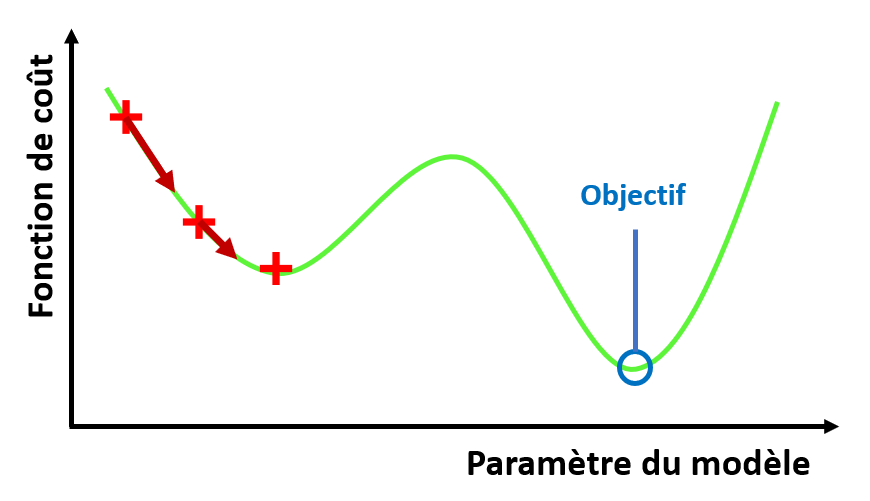
C'est pourquoi en général, on ne va pas lancer un seul entrainement pour un jeu d'hyperparamètres, mais plusieurs avec des initialisations différentes.
Architecture du modèle
Certains types de modèles peuvent avoir des architectures différentes, plus ou moins complexes suivant le problème à résoudre.
L'exemple le plus évident sont les célèbres réseaux de neurones, dont nous reparlerons dans les chapitres suivants.
Dans le cas de ce type de modèle, on peut jouer sur les hyperparmètres suivants:
-
Le nombre de couches de neurones.
-
Le nombre de neurones par couche.
-
La fonction d'activation de chaque neurone.
Nous développerons plus tard dans ce cours à quoi correspondent ces différents paramètres.
Entrainement, validation et test
Ce n'est pas parce que notre modèle a convergé vers le minimum global de l'espace de la fonction de coût en fonction de ses paramètres qu'il aura de bonnes performances en généralisation !
Performances en généralisation
En effet, nous avons vu plus tôt que le modèle peut être victime de sur-apprentissage : il a appris trop spécifiquement des données d'entrainement, et n'arrive donc pas à généraliser à de nouvelles données.
Intuitivement, on devine qu'il faudrait mettre de côté une partie de notre base de données d'entrainement, sur laquelle nous n'entrainerons pas notre modèle. Ce sous-ensemble de données servira à tester le modèle une fois l'entrainement terminé, pour vérifier qu'il n'y a pas eu sur-apprentissage.
C'est en effet la stratégie classique pour l'apprentissage d'un modèle. On dit alors que l'on a séparé la base de donnée en un jeu d'entrainement et un jeu de test.
On considèrera alors que les performances obtenues par le modèle sur le jeu de test seront ses performances en généralisation : il aura des performances équivalentes sur tout nouveau jeu de données.
Le problème est alors le suivant :
-
Plus on réserve de données pour les tests, et plus difficile sera l'apprentissage.
-
Plus on réserve de données pour l'entrainement, et moins représentatif sera le test.
Souvent, le compromis retenu est 80% des données pour l'entrainement et 20% des données pour le test.
Pour évaluer les performances en généralisation de notre modèle, on va utiliser une sélection de critères de performance, appelés "metrics" en anglais.
Pour chaque type de modèle, il existe différents critères de performances, qui vont chacun essayer de capturer un aspect différent de la qualité de ses prédictions. Nous verrons des critères de performance classiques dans chacun des chapitres de ce cours.
Validation par exclusion
Une fois que nous avons séparé notre base de données en un jeu d'entrainement et un jeu de test, l'approche naïve pour éviter le sur-apprentissage serait d'entrainer plusieurs modèles avec différents hyperparamètres, et de retenir celui qui donne les meilleures performances en test.
Cependant, si vous faites ceci, il y a peu de chances que votre modèle ait de bonnes performances en généralisation.
En effet, ce processus revient à optimiser les hyperparamètres spécifiquement pour notre jeu de données de test.
C'est pourquoi on va en réalité diviser extraire un 3ème sous-ensemble de notre base de jeu d'entrainement : un jeu de validation.
L'optimisation des hyperparamètres se fera sur ce basant sur les performance en validation, et l'évaluation des performances en généralisation ce fera sur le jeu de test.
Attention ! Les performances en test ne doivent jamais être optimisées, au risque de ne plus être représentatives des performances en généralisation du modèle !
Le processus que nous avons décrit ici est connu sous le nom de validation par exclusion. Le voici décrit en détails :
| Validation par exclusion |
|---|
| - On sépare la base de données en un jeu d'entrainement, un jeu de validation et un jeu de test. |
| - On entraine plusieurs modèles sur le jeu d'entrainement, avec différents hyperparamètres. |
| - On sélectionne le modèle ayant les meilleurs résultats sur le jeu de validation. |
| - On ré-entraine ce modèle avec les mêmes hyperparamètres, sur les données d'entrainement et de validation. |
| - On évalue les performances en généralisation de ce modèle sur les données de test. |
Souvent, on retiendra 60% des données pour l'entrainement, 20% des données pour la validation et 20% des données pour le test.
Voici la validation par exclusion résumée schématiquement :
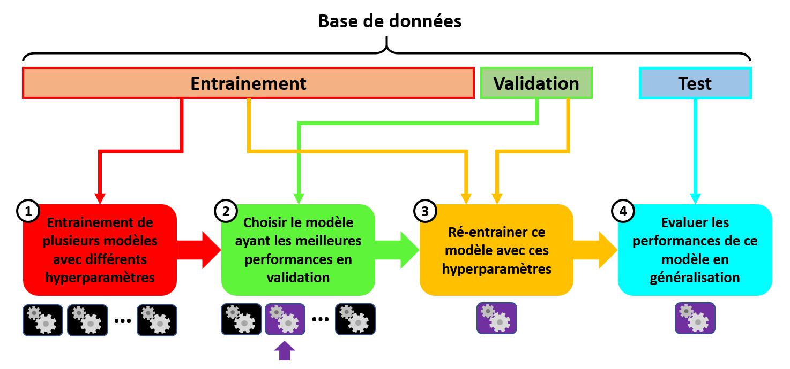
| Astuce Python |
|---|
| La bibliothèque Scikit-Learn possède dans son package "model_selection" une fonction "train_test_split" pour séparer une base de données en jeux d'entrainement et de test. |
Validation croisée
La validation par exclusion a 2 grands défauts :
-
En découpant en 3 jeux les données disponibles, nous réduisons la taille de la base de données d'entrainement, et donc nous rendons l'apprentissage plus difficile.
-
Les résultats peuvent dépendre de la manière dont nous avons découpé notre base de données en 3.
C'est pourquoi on lui préfère souvent la validation croisée.
L'idée est la suivante : on met toujours de côté un jeu de test, mais on ne réalise plus une séparation entre données d'entrainement et données de validation. A la place, on sépare la base d'entrainement en plusieurs petits jeux de données, et on réalise plusieurs entrainements du modèle, avec pour chacun jeu un de validation différent parmi ces petits jeux.
| Validation croisée |
|---|
| - On sépare la base de données en un jeu d'entrainement et un jeu de test. |
| - On sépare le jeu d'entrainement en k sous-jeux. |
| - On réalise k combinaisons, où un des k sous-jeux est utilisé pour la validation, pendant que les k-1 autres sont utilisées pour l'entrainement. |
| - La qualité des prédictions du modèle est évaluée à chaque itération comme étant la moyenne de celles évaluée pour chaque combinaison. |
| - On sélectionne le modèle ayant en moyenne les meilleurs résultats en validation. |
| - On ré-entraine ce modèle avec les mêmes hyperparamètres, sur le jeu d'entrainement complet. |
| - On évalue les performances en généralisation de ce modèle sur les données de test. |
Voici la validation croisée résumée schématiquement :
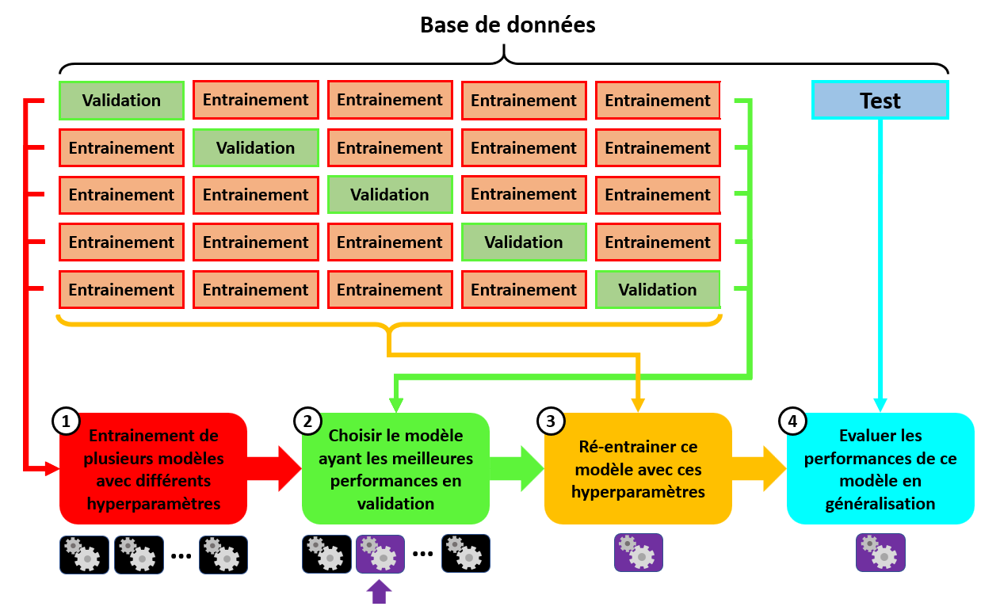
Cette stratégie d'apprentissage a tout de même un désavantage comparée à la validation par exclusion : elle nécessite un temps de calcul beaucoup plus long !
| Astuce Python |
|---|
| La bibliothèque Scikit-Learn possède dans son package "model_selection" une fonction "cross_validate". |
Régularisation par arrêt prématuré
Nous avons vu que la stratégie recommandée pour éviter les problèmes de généralisation est de comparer les performances du modèle obtenues sur les données d'entrainement à celles obtenues sur les données de validation.
Pour éviter le sur-apprentissage, on peut en plus appliquer lors de l'entrainement la méthode de régularisation connue sous le nom d'arrêt prématuré ("early-stopping" en anglais).
Son principe se base sur les idées suivantes :
-
Puisque nous optimisons les paramètres du modèle pour minimiser la fonction de coût, nous nous attendons à ce qu'au cours de l'entrainement, les valeurs de la fonction de coût décroissent avec les époques pour les données d'entrainement.
-
A mesure que le modèle est optimisé sur les données d'entrainement, nous nous attendons d'abord à ce que dans un 1er temps, la fonction de coût décroisse aussi avec avec les époques pour les données de validation.
-
Mais lorsque le modèle se met à souffrir de sur-apprentissage, nous nous attendons à ce que la fonction de coût se mette à croître avec les époques pour les données de validation.
On peut donc détecter le début du sur-apprentissage comme étant l'époque où la fonction de coût se met à croitre pour les données de validation, et arrêter l'apprentissage à cette itération. D'où le nom d'"arrêt prématuré".
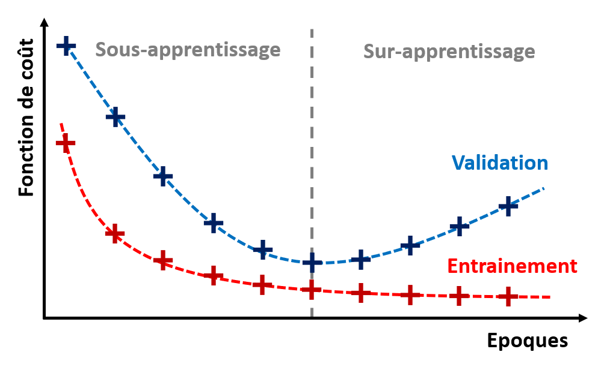
Le processus exact est le suivant :
| Arrêt prématuré |
|---|
| Pour chaque itération du processus d'apprentissage : |
| - On évalue la fonction de coût pour les prédictions de la méthode sur le jeu d'entrainement. |
| - On évalue la fonction de coût pour les prédictions de la méthode sur le jeu d'évaluation. |
| - On vérifie qu'on a bien une décroissance pour les 2 valeurs, sinon on stoppe l'entrainement. |
Import de données et fichiers CSV
Pour enregistrer une base de données sous la forme d'un tableau, on utilise couramment le format CSV : "Comma Separated Values".
Il s'agit d'un format ouvert, compréhensible par un humain, qui peut être lu par n'importe quel éditeur de texte.
Comme son nom l'indique, un fichier CSV s'organise de la manière suivante :
-
Chaque ligne correspond à une ligne du tableau. Les lignes sont séparées par un retour à la ligne "\n".
-
Au sein d'une ligne, les éléments de chaque colonnes sont séparés par des virgules ",".
-
La première ligne est souvent considérée comme l'en-tête du tableau (le nom des colonnes).
D'où le nom "Comma Separated Values".
Voici un exemple de tableau de données :
| Ville | Latitude | Longitude | Nom |
|---|---|---|---|
| Paris | 48.866667 | 2.333333 | Pain au chocolat |
| Orléans | 47.902734 | 1.908607 | Pain au chocolat |
| Bordeaux | 44.841225 | -0.580036 | Chocolatine |
| Brest | 48.390528 | -4.486009 | Pain au chocolat |
| Toulouse | 43.604464 | 1.444243 | Chocolatine |
Et voici tout simplement sa conversion en format CSV :
Ville,Latitude,Longitude,Nom
Paris,48.866667,2.333333,Pain au chocolat
Orléans,47.902734,1.908607,Pain au chocolat
Bordeaux,44.841225,-0.580036,Chocolatine
Brest,48.390528,-4.486009,Pain au chocolat
Toulouse,43.604464,1.444243,Chocolatine
L'extension d'un fichier CSV est ".csv". Il peut être importé par la plupart des logiciels tableurs (Excel, OpenOffice Calc), et sous Python avec la bibliothèque Pandas, dont nous reparlerons plus loin.
| Astuce Python |
|---|
| Avec la bibliothèque Python "Pandas", on peut importer un fichier CSV sous la forme d'un "DataFrame" (tableau de données propre à "Pandas") avec la méthode "read_csv". |
Bien qu'il soit très utilisé, le format CSV a quelques désavantages. Notamment :
-
Il n'est pas optimal en terme de mémoire.
-
Il empêche d'utiliser le caractère "," pour autre chose que séparer les colonnes du tableau.
C'est pourquoi, suivant les applications, on préfèrera utiliser un fichier binaire.
Outils Python pour l'apprentissage
Pour chacun des programmes Python présentés dans ce cours, on partira du principe que les bibliothèques Numpy et Matplotlib sont importées.
Pandas
Pandas est une bibliothèque Python très populaire pour l'analyse de données.
Elle permet :
-
D'importer des données sous la forme d'un conteneur nommé "DataFrame".
-
De manipuler ces données de manière efficace.
-
D'afficher facilement des graphiques à partir de ces données.
-
D'exporter ces données en différents formats.
-
De fournir une entrée pour l'apprentissage de modèles.
Elle s'importe souvent sous le nom "pd" avec la commande :
import pandas as pd
Un DataFrame Pandas contient un jeu de données sous la forme d'un tableau 2D, pouvant contenir des objets de types différents.
On associe à chaque donnée dans un DataFrame une "column" correspondant au nom de la variable, et un "index" correspondant au numéro de l'individu.
Voici notre exemple de tableau précédent, converti en DataFrame :
| 'Ville' | 'Latitude' | 'Longitude' | 'Nom' | |
|---|---|---|---|---|
| 0 | 'Paris' | 48.866667 | 2.333333 | 'Pain au chocolat' |
| 1 | 'Orléans' | 47.902734 | 1.908607 | 'Pain au chocolat' |
| 2 | 'Bordeaux' | 44.841225 | -0.580036 | 'Chocolatine' |
| 3 | 'Brest' | 48.390528 | -4.486009 | 'Pain au chocolat' |
| 4 | 'Toulouse' | 43.604464 | 1.444243 | 'Chocolatine' |
On peut accéder à une ligne d'indice i d'un DataFrame df avec la commande :
df.loc[i]
Et on peut accéder à une colonne 'col' d'un DataFrame df avec la commande :
df['col']
On peut également sélectionner un sous-ensemble de données à partir d'un DataFrame, de manière conditionnelle.
Par exemple, pour créer un DataFrame df2 à partir de notre DataFrame précédent que nous nommerons df, mais ne contenant que les individus pour lesquels la variable 'Latitude' est inférieure à 48.5, et la variable 'Nom' est égale à 'Pain au chocolat', on utilisera la commande :
df2 = df[(df['Latitude']<48.5)&(df['Nom']=='Pain au chocolat')]
On obtient alors le DataFrame df2 suivant :
| 'Ville' | 'Latitude' | 'Longitude' | 'Nom' | |
|---|---|---|---|---|
| 1 | 'Orléans' | 47.902734 | 1.908607 | 'Pain au chocolat' |
| 3 | 'Brest' | 48.390528 | -4.486009 | 'Pain au chocolat' |
On remarque que pour l'opérateur booléen ET on doit utiliser "&", et pour l'opérateur booléen OU on doit utiliser "|".
Nous utiliserons la bibliothèque Pandas afin d'importer, d'analyser et de manipuler des données dans le cadre de ce cours.
Scipy
Bien que Scipy ne soit pas à proprement parler une bibliothèque d'apprentissage automatique, on trouve dans son module "stats" des outils d'inférence statistique de base pour de la classification et de la régression.
On peut importer ce module avec la commande Python suivante :
import scipy.stats
Dans le cadre de ce cours, nous utiliserons Scipy pour certaines méthodes de base, car ses implémentations sont moins des "boites noires" que pour d'autres bibliothèques.
Scikit-Learn
Scikit-Learn est une bibliothèque Python pour l'apprentissage automatique.
Elle contient des implémentations de méthodes pour :
-
La classification supervisée.
-
La régression.
-
Le partitionnement.
-
La réduction de dimensionnalité.
On peut importer cette bibliothèque Python avec la commande :
import sklearn
Même si en général on n'importe pas toute la bibliothèque, mais seulement les packages dont on a besoin.
Nous utiliserons la bibliothèque Scikit-Learn pour de l'apprentissage de modèles dans le cadre de ce cours.
Seaborn
Seaborn est une bibliothèque Python d'affichage graphique de données statistiques.
Ses outils d'affichage peuvent s'avérer utiles en complément de ceux de Pandas et Matplotlib.
Elle s'importe souvent sous le nom "sns" avec la commande :
import seaborn as sns
Nous utiliserons quelques outils d'affichage graphique de Seaborn dans le cadre de ce cours.
Keras-Tensorflow, Pytorch
Pour aller plus loin, lorsque le modèle est un réseau de neurones, et que ce réseau contient de nombreuses couches de neurones, on entre dans un sous-domaine de l'apprentissage appelé apprentissage profond ("deep learning" en anglais). (Nous reparlerons des réseaux de neurones dans les chapitres suivants).
Pour l'apprentissage profond, il existe 2 grandes bibliothèques concurrentes sur Python : Keras-Tensorflow et Pytorch.
L'apprentissage profond ne sera pas au programme de ce cours, qui n'est qu'une introduction aux sciences des données.
Conclusion
Ce chapitre vous a donné une introduction très générale aux sciences des données. La suite de ce cours sera découpée en 3 chapitres, portant chacun sur un type d'apprentissage automatique :
-
La classification supervisée.
-
La régression.
-
Le partitionnement ("clustering" ou "classification non-supervisée").
Chacun introduira de manière générale son type d'apprentissage, présentera un panel des modèles de base, et donnera des outils d'évaluation des performances. Un exemple "fil rouge" d'application sera utilisé pour illustrer chaque chapitre.